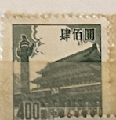
| SOURCE | TITLE| IMAGE MATCH | click to source page |
| eBay | PR China 1954 Sixth Issue $400 Used A19P57F492 | eBay | 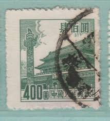 |
| eBay Australia | Cats Chinese Stamps for sale | Shop with Afterpay | eBay Australia |  |
| eBay | Gray Chinese Stamps for sale | eBay | 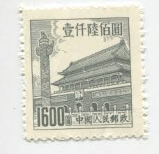 |
| eBay | Mint Hinged Individual Chinese Stamps for sale | Shop with Afterpay | eBay Australia |  |
| eBay UK | China B04 MNG 1954 1v | eBay UK | 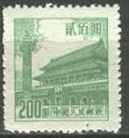 |
| eBay | People's Republic of China Scott #210 Mint No Gum As Issued | eBay |  |
| HipStamp | China 1600$ (TS-1352) | Asia - China, Stamp / HipStamp |  |
| Shutterstock | 3+ Thousand Beijing Stamp Royalty-Free Images, Stock Photos & Pictures | Shutterstock |  |
| PicClick | CHINA - "GATE Of Heavenly Peace" - Lot Of 9 Old Stamps - Unused!! $1.99 - PicClick |  |
| Amazon.com | Amazon.com: China Stamps - 1954, R7, Scott 206-213 Regular Issue with Design of Tian An Men (6th Print), MNH, F-VF: Posters & Prints | 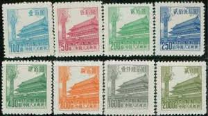 |
| PicClick | CHINA ASIA Stamps Mint Hinged Ng Lot 900Bj $2.25 - PicClick |  |
| eBay UK | Mint Never Hinged/MNH Single Chinese Stamps for sale | eBay UK | 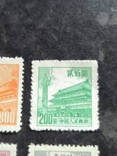 |
| Kenmore Stamp | Gate of Heavenly Peace - PRC #211 |  |
| ebid.net | China 1954 Gate of Heavenly Peace 1600 Used Stamp on eBid United States | 213883002 |  |
| carousell.ph | heaven gate - View all heaven gate ads in Carousell Philippines | 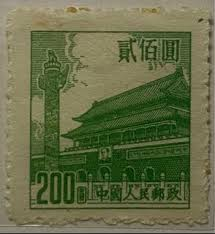 |
| Find Your Stamps Value | Gate of Heavenly Peace - 天安门 $800 Orange stamp price, value | 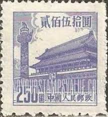 |
| chinesestamp.org | R10/PU10/普10, Regular Issue with Flower Design《花卉普通邮票》 - Chinese Postage Stamps | China Postage Stamps | Chinese Stamp Album | China Philatel | ACPF | Stamps Catalogue of PRC | 中国邮票目录| 中国邮票 |  |
| eBay | 1954 CHINA SC#210 MNH NG VF🔥 GATE OF HEAVENLY PEACE🔥 | eBay | 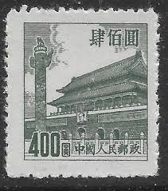 |
| Todocolección | china 1949 sello (*) - 9/48 - Buy Antique stamps of China on todocoleccion | 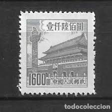 |
| Anyone interested ??1🙈🙊🙉👌 | 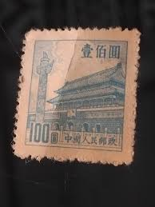 | |
| eBay | 1954 PRC CHINA Sc# 206-212🔥MNG🔥GATE OF HEAVENLY PEACE🔥 ARCHITECTURE | eBay |  |
| Freestampcatalogue.com | Stamp 1954, China People's Republic Definitives 8v, 1954 - Collecting Stamps - Freestampcatalogue.com - The free online stampcatalogue with over 500.000 stamps listed. | 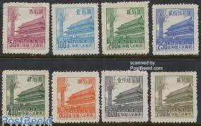 |
| Stamp Community Forum | Need Help About Heaven Gate China Stamps - Stamp Community Forum |  |
| Shutterstock | Karnalharyana India -july 15th 2025-closeup Postage Stock Photo 2695882073 | Shutterstock |  |
| eBay | PR China 1954 Sixth Issue $400 Used A19P57F491 | eBay |  |
| eBay | Las mejores ofertas en Gatos Sellos chinos | eBay |  |
| bwdavis.us | WW China, Peoples Rep. of - Collectibles of Bwdavis | 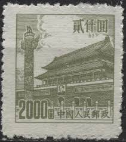 |
| China stamp | R4 Scott 85-94 Regular Essur with Design of Tian An Men (4th Print) - China Stamps | 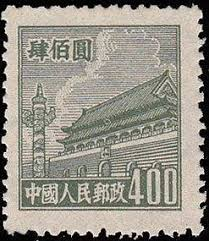 |
| eBay | China (PR) #206-13 used | eBay |  |
| eBay | PR China 1954 Sixth Issue $200 Used A19P57F488 | eBay | 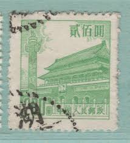 |
| eBay | 1954 CHINA SC#207 MNH NG🔥 GATE OF HEAVENLY PEACE🔥VF | eBay | 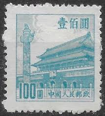 |
| eBay | China 235 unused 1954 clear brands | eBay | 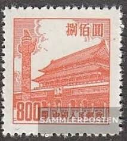 |
| eBay | 1950 CHINA LOT 7 Tiananmen Square STAMPS ( SOUV D4 ) LB19 | eBay |  |
| eBay | China 1954, Tiananmen - Gate of Heavenly Peace, Bejing, MNG Stamp | eBay | 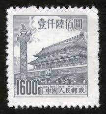 |
| eBay | PRC China 209 MH | eBay |  |
| eBay | Olive Chinese Stamps for sale | eBay | 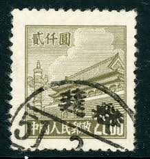 |
| Xabusiness.com | Architecture stamps of China | 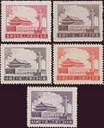 |
| eBay | PR China 1954 Sixth Issue $200 MNG A19P57F487 | eBay | 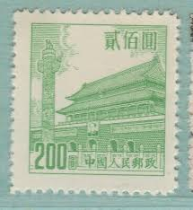 |
| Find Your Stamps Value | Value of 厦门外围包夜（约炮上门）联系方式维心安排加88236881联系方式维心-城市周边都可安排顶级女孩20250508JEHWKJHFKJNCXVNKNV.iqf stamps |  |
| 100outlets.com | R7 CTO Tian'anmen Tower 1954 China Regular Stamps on 100outlets.com | 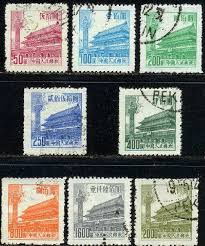 |
| Find Your Stamps Value | Gate of Heavenly Peace - 天安门 $2 Sepia stamp price, value | 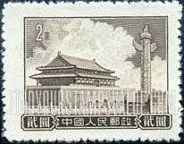 |
| eBay | China 1954 Scott #206-213 Gate of Heavenly Peace Peking Mint NH/Used | eBay | 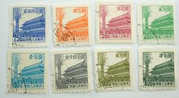 |
| eBay | 1950 PRC China Sc#88 USED VF | eBay |  |
| Stamp Community Forum | China: Gate Of Heavenly Peace. - Stamp Community Forum |  |
| Find Your Stamps Value | NORTHEAST CHINA: Gate of Heavenly Peace - 中国东北: 东北贴用: 天安门$1000 Orange Briefmarkenpreis | 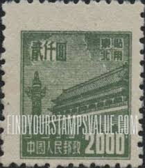 |
| ebid.net | China 1954 Gate of Heavenly Peace 800 Used Stamp on eBid United States | 213883001 | 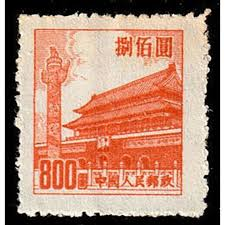 |
| eBay | Stamp China 1954 Peoples Republic 50 yuan Tian An Men with variety break "0" | eBay | 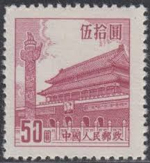 |
| eBay | Ryukyu Islands 3XR7 Miyako Provisional Stamp (Lot RY Bx 2811) | eBay |  |
| Alamy | 1950 2000 hi-res stock photography and images - Alamy |  |
| eBay | P.R. CHINA 211 - Gate of Heavenly Peace "1954 6th Printing" (pa76500) | eBay |  |
| eBay | Taiwan China ROC SC 211,213 NGAI (6fge) | eBay | 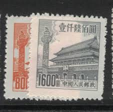 |
| Colnect | China, People's Republic : Stamps [Year: 1951] [1/5] : Colnect 📮 | 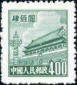 |
| Find Your Stamps Value | Valeur du timbre Gate of heavenly peace 20000 |  |
| eBay | People's Republic of China Scott #92 Used | eBay | 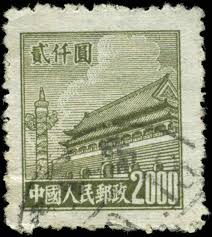 |
| Etsy | Postage Stamps,set of 8 ,gate of Heavenly Peace,pcr,china - Etsy | 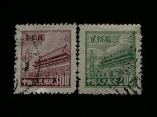 |
| Alamy | China postage stamp hi-res stock photography and images - Alamy | 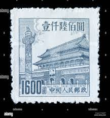 |
| eBay | 1954 PRC CHINA Sc# 209🔥MNG🔥GATE OF HEAVENLY PEACE🔥 ARCHITECTURE | eBay | 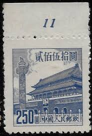 |
| eBay | China PRC Stamps: 1950-1, SC88, 90, 92 . Used | eBay | 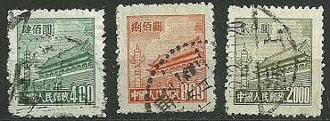 |
| eBay | PEOPLES REPUBLIC OF CHINA SCOTT 209 MNG VF - 1954 $250 ULTRA ISSUE | eBay |  |